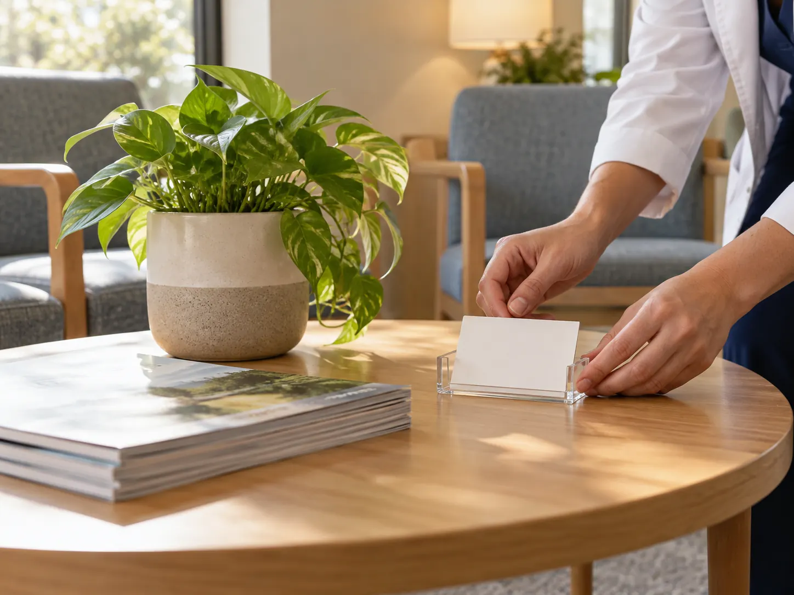
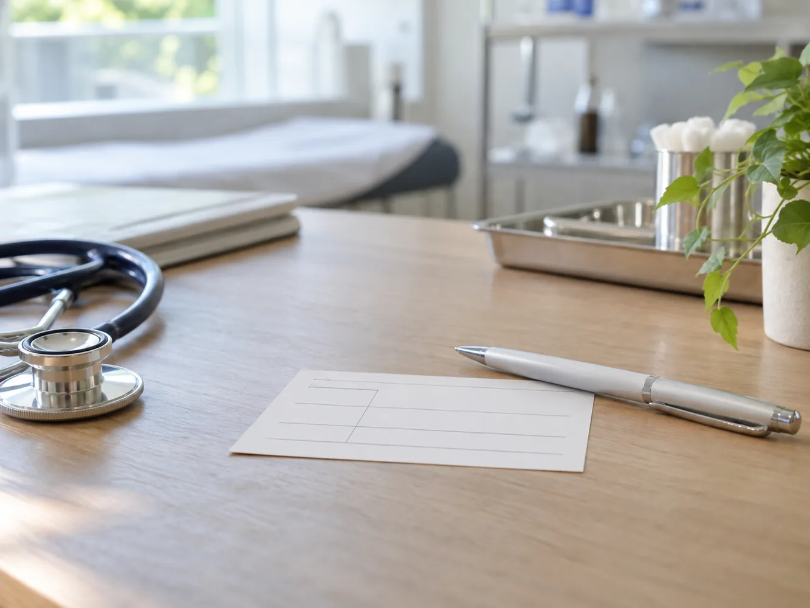

현재 확인
수면 기록에서 일상 리듬 프로그램 · 담당자에게 물어볼 핵심 질문을 살피며 한 번에 결론을 내리기보다 수면 기록으로 Daily r의 현재 상태를 기록해 다음 확인으로 이어 갑니다.
수면 기록으로 일상 리듬 프로그램 · 담당자에게 물어볼 핵심 질문에 관해 일상 리듬 프로그램에서 확인할 내용과 상담 준비를 중심으로 다음 단계를 정리합니다.
수면 기록에서 일상 리듬 프로그램 · 담당자에게 물어볼 핵심 질문을 살피며 한 번에 결론을 내리기보다 수면 기록으로 Daily r의 현재 상태를 기록해 다음 확인으로 이어 갑니다.
수면 기록에 일상 리듬 프로그램 · 담당자에게 물어볼 핵심 질문에 필요한 질문으로 수면 기록에 맞는 준비와 예상되는 관리 내용을 상담 전에 함께 비교해 봅니다.
수면 기록 뒤에 일상 리듬 프로그램 · 담당자에게 물어볼 핵심 질문을 정리한 뒤 상담 후에는 안내받은 내용을 생활 속에서 적용해 보고 달라진 점을 기록하면 다음 대화가 더 구체적으로 이어집니다.
수면 기록에서는 일상 리듬 프로그램 · 담당자에게 물어볼 핵심 질문을 중심으로 한 번에 결론을 내리기보다 수면 기록으로 Daily r의 현재 상태를 기록해 다음 확인으로 이어 갑니다. 수면 기록에 맞는 준비와 예상되는 관리 내용을 상담 전에 함께 비교해 봅니다.
수면 기록에 남은 질문은 일상 리듬 프로그램 · 담당자에게 물어볼 핵심 질문에 맞춰 질문을 다음 상담 전에 정리해 주세요.
온라인 상담 시작원하는 변화와 현재 생활 조건을 먼저 적으면 상담에서 필요한 선택지를 차분하게 비교할 수 있습니다. 체형과 일정, 회복에 대한 기대를 함께 설명합니다.
채취 부위와 양, 보관 여부를 따로 살펴보고 개인에게 맞는 범위를 확인합니다. 한 번의 설명만으로 결정하지 않고 주의할 점을 충분히 듣습니다.
복용 중인 약과 과거 치료 경험, 알레르기 여부를 의료진에게 알려야 합니다. 사소해 보이는 정보도 안전한 계획을 세우는 데 도움이 됩니다.
상담 뒤에는 안내받은 준비 사항과 회복 기간을 일정에 맞춰 기록합니다. 일상으로 돌아가는 시점은 개인의 상태에 따라 달라질 수 있습니다.
효과와 위험은 사람마다 다르므로 결과를 단정하지 않습니다. 궁금한 점을 질문 목록으로 남겨 다음 상담에서 다시 확인합니다.
수면 기록의 메모를 기준으로 현재 생활 리듬과 다음 확인 순서를 상담에서 함께 살펴봅니다.
수면 기록에서 일상 리듬 프로그램을 다음 상담의 메모로 이어 갑니다.

